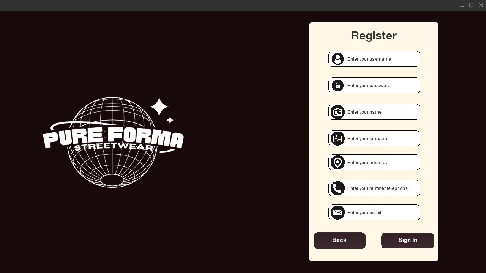
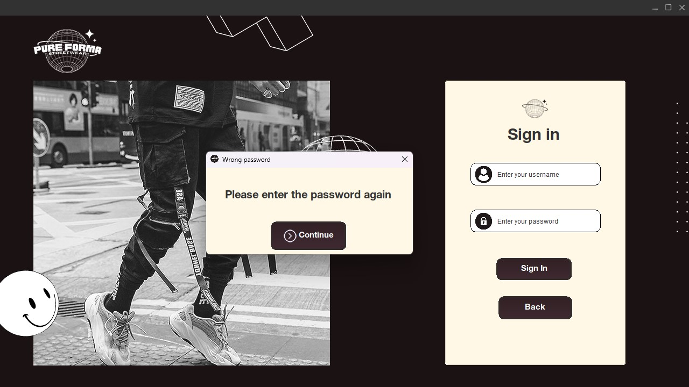
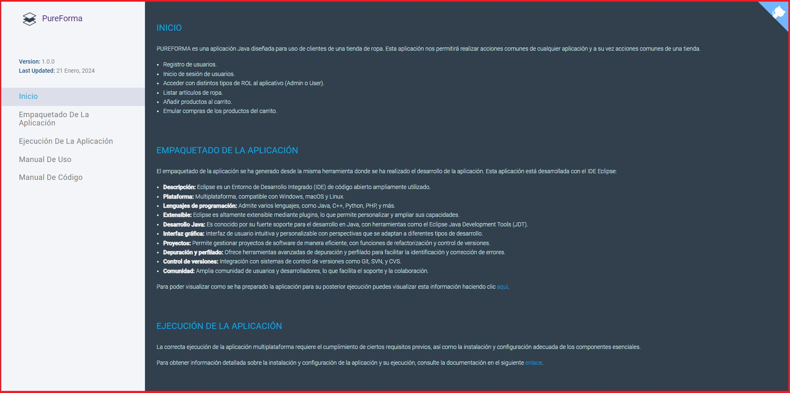

Introducción
Este manual proporciona instrucciones detalladas sobre el uso eficiente de la aplicación de tienda de ropa. A lo largo de este documento, encontrarás información esencial para realizar acciones clave, como iniciar sesión, registrar un nuevo usuario y acceder a la documentación en línea. Cada sección aborda de manera exhaustiva los pasos necesarios para aprovechar al máximo las funcionalidades de la aplicación, asegurando una experiencia fluida y segura. ¡Descubre cómo gestionar tu cuenta y explorar las características únicas diseñadas para mejorar tu experiencia de compra.
1. Ventana Principal
La ventana principal de la aplicación te ofrece diversas funcionalidades para gestionar tu experiencia.
1.1 Registrar Usuario
En la ventana de bienvenida encontrarás el botón de Sign Up el cual abrirá una nueva ventana que nos permitirá realizar el registro de nuestra cuenta.
1.2 Iniciar Sesión
Otra acción que se puede realizar en la aplicación es iniciar la sesión, para ello está detinado el botón Sign In el cual abrirá una nueva ventana que permitirá validar el usuario que hayamos creado en la ventana de registro de usuario y nos permitirá acceder a la aplicación.
1.3 Acceder a la Documentación Online
Si necesitas información adicional sobre el uso de la aplicación, selecciona HELP. Esto te dirigirá a recursos en línea donde podrás encontrar guías detalladas, tutoriales y otras ayudas relacionadas con la aplicación.
2. Registro de Usuarios
El proceso de registro es crucial para personalizar tu experiencia y garantizar la seguridad de tu cuenta:
- Username: Selecciona un nombre único que te identifique de manera exclusiva en la aplicación.
- Password: Elige una contraseña segura que combine letras, números y caracteres especiales.
- Name y Surname: Proporciona tu nombre y apellido para una experiencia personalizada.
- Address: Ingresa tu dirección para facilitar el proceso de envío en caso de compras.
- Telephone: Proporciona un número de teléfono válido para posibles comunicaciones y actualizaciones.
- Email: Ingresa una dirección de correo electrónico válida y de uso frecuente.
Después de completar estos campos, la aplicación cifrará tu contraseña y almacenará todos los datos de manera segura en la base de datos remota, asegurando la confidencialidad de tu información personal.
3. Iniciar Sesión
Para acceder a tu cuenta existente, selecciona Sign In. Ingresa tu nombre de usuario y contraseña en los campos correspondientes. La aplicación verificará la autenticidad de tus credenciales con la información almacenada en la base de datos remota. Si la verificación es exitosa, tendrás acceso a todas las funcionalidades de la aplicación diseñadas para mejorar tu experiencia de compra.
Durante el inicio de sesión si intetamos acceder sin establecer datos o el usuario y la contraseña son incorrectas aparecerá un mensaje emergente el cual nos indica que debemos de volver a establecer las credenciales correctas para poder iniciar la sesión.
4. Documentación en línea
Si buscas obtener información detallada tanto sobre el uso práctico como aspectos técnicos de la aplicación, te invitamos a explorar la opción HELP. Al seleccionar esta función, serás dirigido a una completa variedad de recursos en línea diseñados para proporcionarte una guía integral.
Esta sección abarca tanto guías de uso práctico como guías técnicas, adaptándose a las necesidades de usuarios con diferentes niveles de experiencia. Las guías de uso práctico te ofrecerán instrucciones paso a paso sobre cómo aprovechar al máximo las funciones y características de la aplicación en situaciones cotidianas.
En resumen, al seleccionar HELP, tendrás acceso a una guía completa que cubre tanto los aspectos prácticos como los técnicos de la aplicación, asegurando que puedas utilizarla de manera efectiva y aprovechar al máximo sus capacidades.
